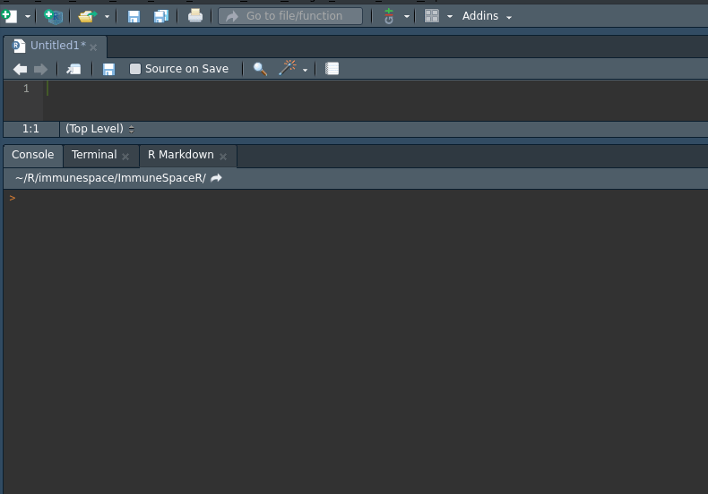
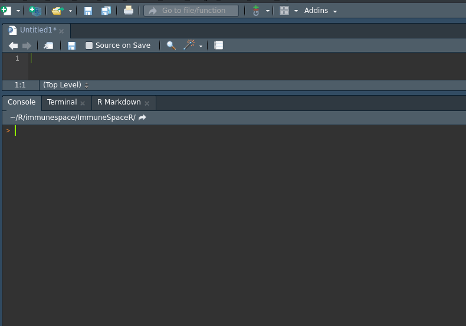

vignettes/interactiveNetrc.Rmd
interactiveNetrc.RmdThis vignette shows detailed examples for all functionalities of the interactive_netrc method.
In order to connect to ImmuneSpace, you will need a .netrc file in your home directory that will contain a machine name (hostname of ImmuneSpace), and your ImmuneSpace login and password. See here for more information.
A netrc file may look like this:
machine www.immunespace.org
login myuser@domain.com
password supersecretpasswordThere are two options when it comes to writing a netrc. If you’re familiar with the command line see the Intro to ImmuneSpace vignette. For those less comfortable with the command line there is the interactive_netrc method.
The interactive_netrc method will check if a netrc file already exists, prompt the user for login and password information in the R console, check that the provided login information allows the user to connect to ImmuneSpace, and if the connection is valid then write the information to a netrc file in the user’s home directory. Below is a gif demonstrating how to use this method.

In the case that the user did not provide login information that results in a connection to ImmuneSpace, a netrc file will not be written to the user’s home directory and the user can try the method again checking for typos. If the user still cannot connect to ImmuneSpace via the API they might want to double check that they are registered and that their login information works for ImmuneSpace.
If a netrc file already exists interactive_netrc will print the existing file to the console, and ask the user if they wish to overwrite that file. A YES will result in the same process as if there were no netrc and overwrite the existing file. A NO will simply check if the existing netrc is able to connect to ImmuneSpace. No new netrc file will be created. Below is a gif demonstrating how this works.

sessionInfo()## R version 3.5.1 (2018-07-02)
## Platform: x86_64-pc-linux-gnu (64-bit)
## Running under: Ubuntu 16.04.1 LTS
##
## Matrix products: default
## BLAS: /usr/lib/libblas/libblas.so.3.6.0
## LAPACK: /usr/lib/lapack/liblapack.so.3.6.0
##
## locale:
## [1] LC_CTYPE=en_US.UTF-8 LC_NUMERIC=C
## [3] LC_TIME=en_US.UTF-8 LC_COLLATE=en_US.UTF-8
## [5] LC_MONETARY=en_US.UTF-8 LC_MESSAGES=en_US.UTF-8
## [7] LC_PAPER=en_US.UTF-8 LC_NAME=C
## [9] LC_ADDRESS=C LC_TELEPHONE=C
## [11] LC_MEASUREMENT=en_US.UTF-8 LC_IDENTIFICATION=C
##
## attached base packages:
## [1] stats graphics grDevices utils datasets methods base
##
## other attached packages:
## [1] rmarkdown_1.10 knitr_1.20
##
## loaded via a namespace (and not attached):
## [1] Rcpp_0.12.18 rstudioapi_0.7 xml2_1.2.0 magrittr_1.5
## [5] roxygen2_6.0.1 MASS_7.3-50 R6_2.2.2 rlang_0.2.1
## [9] stringr_1.3.1 tools_3.5.1 htmltools_0.3.6 commonmark_1.5
## [13] yaml_2.1.19 rprojroot_1.3-2 digest_0.6.15 assertthat_0.2.0
## [17] pkgdown_1.1.0 crayon_1.3.4 fs_1.2.5 memoise_1.1.0
## [21] evaluate_0.11 stringi_1.2.4 compiler_3.5.1 desc_1.2.0
## [25] backports_1.1.2